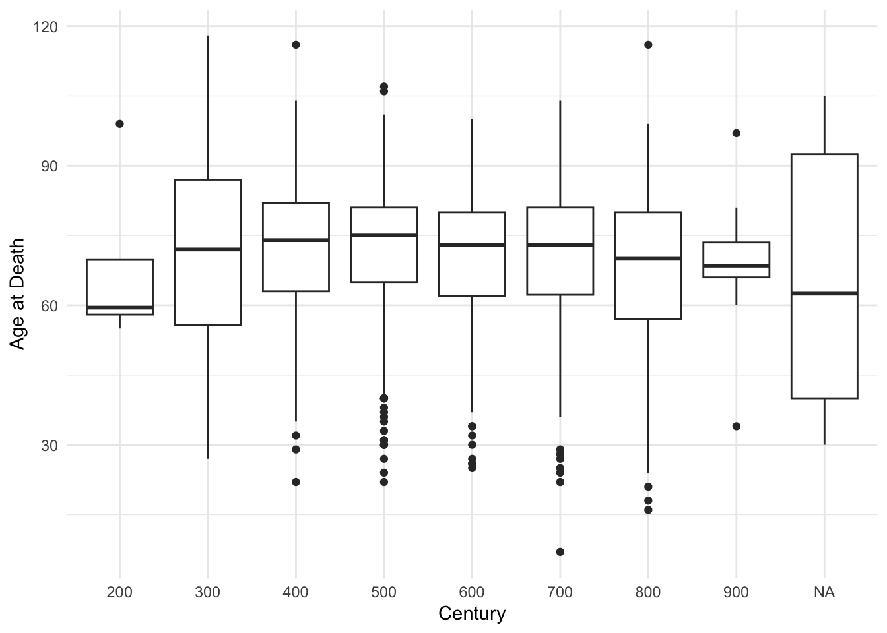
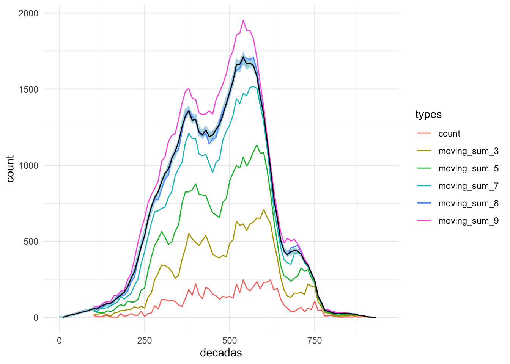

12 Modeling Complex Entities
12.1 Modeling Regions
Let’s begin with loading necessary libraries and the PUA data.
library(tidyverse)
library(sf)
library(rnaturalearth)
library(rnaturalearthdata)
library(ggmap)
library(ggspatial)
library(ggrepel)
PUA <- readRDS("./data/PUA_processed/PUA_allDataTables_asList.rds")We now can load the prepared basemap and then customize its appearance with a theme, or load a basemaps with a theme already applied. This way we can now focus only on the data that needs to be added to the basemap.

We have discussed an option of grouping toponyms into regions by some kind of historical administrative divisions. However, we also ran into a problem of instability of such aggregations, which complicates this task.
Another option—or, perhaps, a complimentary option—is to aggregate smaller toponyms into larger places algorithmically. Namely, we can select a certain number of settlements that would act as magnets (let’s call them gravitons), absorbing smaller places (let’s call them satellites). We can make a selection of gravitons based on their importance: for example, based on how many people we find associated with those places in the PUA data. Then, we can then use some algorithmic solution to associate all minor places with the closest graviton. For example, we can calculate distances* from each sattelite to all the gravitons; then we can associate each satellite with the closest graviton. This appraach will not necessarily create the best representation of sub-regions, but it is fast and quite transparent. After creating this algorithmic divisions we can always tweak associations of individual satellites according to our additional knowledge which we did not factor in into the algorithmic implementation. The advantage of such an approach is also in its flexibility: not only can we can always readjust these divisions, we can also experiment with different variations until we find the most optimal one.
Let’s find our top places first. We can pick them from a map that we generated before. Looking at a map is always a good idea, since we may want to combine two prominent locations that are very close to each other into a single graviton; and we might want to single out a minor location as a graviton in order to preserve a representation of some remote region that does not have locations with high frequencies.
Based on the map, I would start with a the following vector (roughly, west to east):
imanes_vector <- c("Silves", "Badajoz", "Sevilla", "Algeciras", "Córdoba",
"Málaga", "Toledo", "Granada", "Almeria", "Murcia",
"Valencia", "Zaragoza", "Mallorca (isla)")
imanes <- PUA$lugar %>%
filter(nombre_castellano %in% imanes_vector) %>%
rename(region = nombre_castellano, latR = lat, lngR = lng) %>%
select(region, latR, lngR)
imanes## # A tibble: 12 × 3
## region latR lngR
## <chr> <dbl> <dbl>
## 1 Córdoba 37.9 -4.78
## 2 Zaragoza 41.6 -0.883
## 3 Murcia 38.0 -1.13
## 4 Sevilla 37.4 -5.98
## 5 Granada 37.2 -3.60
## 6 Málaga 36.7 -4.42
## 7 Mallorca (isla) 39.6 2.65
## 8 Valencia 39.5 -0.375
## 9 Toledo 39.9 -4.03
## 10 Algeciras 36.1 -5.45
## 11 Silves 37.2 -8.43
## 12 Badajoz 38.9 -6.97Now we need to aggregate all locations with these magnets. A way to do that is to calculate the distance between all the places and these magnets. (BTW, feel free to change this list!). In the code below we will connect our PUA$lugar with our magnets (imanes) in such a way that each place in our table will get joined with each and every magnet.
lugares_con_imanes <- PUA$lugar %>%
merge(imanes, by = NULL) %>%
# REMOVE ALL PLACES WITH NA
filter(!is.na(lat)) %>%
filter(FLAG_alandalus == 1) %>%
arrange(idLugar) %>%
select(-notas, -descripcion)
lugares_con_imanes <- as_tibble(lugares_con_imanes)
lugares_con_imanes## # A tibble: 4,764 × 9
## idLugar FLAG_alandalus nombre nombre_castellano lat lng region latR lngR
## <dbl> <dbl> <chr> <chr> <dbl> <dbl> <chr> <dbl> <dbl>
## 1 4 1 قرطبة Córdoba 37.9 -4.78 Córdoba 37.9 -4.78
## 2 4 1 قرطبة Córdoba 37.9 -4.78 Zaragoza 41.6 -0.883
## 3 4 1 قرطبة Córdoba 37.9 -4.78 Murcia 38.0 -1.13
## 4 4 1 قرطبة Córdoba 37.9 -4.78 Sevilla 37.4 -5.98
## 5 4 1 قرطبة Córdoba 37.9 -4.78 Granada 37.2 -3.60
## 6 4 1 قرطبة Córdoba 37.9 -4.78 Málaga 36.7 -4.42
## 7 4 1 قرطبة Córdoba 37.9 -4.78 Mallorca (isla) 39.6 2.65
## 8 4 1 قرطبة Córdoba 37.9 -4.78 Valencia 39.5 -0.375
## 9 4 1 قرطبة Córdoba 37.9 -4.78 Toledo 39.9 -4.03
## 10 4 1 قرطبة Córdoba 37.9 -4.78 Algeciras 36.1 -5.45
## # ℹ 4,754 more rowsNow, we need a way to calculate distances between the places. The issue here is that we need to use a special complex formula that would allow us to calculate the length of so-called “great circles” (or arcs), which is the shortest distance over the earth’s surface, giving “as-the-crow-flies” distance between each pair of points. For that we need to use the Haversine formula. We can write a function that would do the calculations and then apply it to the table. This is where ChatGPT can be very helpful, since you can ask it to implement the formula in R:
# Haversine function to calculate distance between two coordinates
haversine <- function(long1, lat1, long2, lat2) {
# Convert degrees to radians
long1 <- long1 * pi / 180
lat1 <- lat1 * pi / 180
long2 <- long2 * pi / 180
lat2 <- lat2 * pi / 180
# Haversine formula
dlon <- long2 - long1
dlat <- lat2 - lat1
a <- sin(dlat / 2)^2 + cos(lat1) * cos(lat2) * sin(dlon / 2)^2
c <- 2 * atan2(sqrt(a), sqrt(1 - a))
# Radius of the earth in kilometers
r <- 6371.0
# Distance in kilometers
return(r * c)
}Note: since ChatGPT is a generative model, it will always try to give you some answer, but it does not mean that the answer will be correct. One should always keep this in mind and cross-examine ChatGPT results. In this specific case we can simply google distances between specific places and check how close those results are to what we have calculated with the ChatGPT-provided function. One other thing to keep in mind: ChatGPT often tries to use some libraries as shortcuts to solving specific problems, but this approach tends to fail quite often with R. For example, ChatGPT initially suggested code that uses some obscure R library—and it did not work. Instead I asked to implement the Harvestine formula from scratch and wrap it into a function that can be reused.
Now, let’s calculate these distances in our data and pick the closest graviton (i.e., a prominent location for which we have the shortest distance):
lugares_con_imanes_ultimas <- lugares_con_imanes %>%
mutate(distancia = haversine(lng, lat, lngR, latR)) %>%
group_by(idLugar) %>%
top_n(-1, wt = distancia)
lugares_con_imanes_ultimas## # A tibble: 397 × 10
## # Groups: idLugar [397]
## idLugar FLAG_alandalus nombre nombre_castellano lat lng region latR lngR distancia
## <dbl> <dbl> <chr> <chr> <dbl> <dbl> <chr> <dbl> <dbl> <dbl>
## 1 4 1 قرطبة Córdoba 37.9 -4.78 Córdoba 37.9 -4.78 0
## 2 6 1 إلبيرة Elvira 37.2 -3.71 Granada 37.2 -3.60 11.2
## 3 7 1 قلعة يحصب Alcalá la Real 37.4 -3.95 Granada 37.2 -3.60 42.6
## 4 8 1 شذونة Sidonia 36.5 -5.93 Algeciras 36.1 -5.45 55.7
## 5 10 1 سرقسطة Zaragoza 41.6 -0.883 Zaragoza 41.6 -0.883 0
## 6 15 1 أشونة Osuna 37.2 -5.10 Córdoba 37.9 -4.78 77.8
## 7 17 1 جزيرة شقر Alcira 39.2 -0.435 Valencia 39.5 -0.375 35.6
## 8 18 1 مرسية Murcia 38.0 -1.13 Murcia 38.0 -1.13 0
## 9 19 1 شاطبة Játiva 39.0 -0.519 Valencia 39.5 -0.375 54.6
## 10 20 1 إشبيلية Sevilla 37.4 -5.98 Sevilla 37.4 -5.98 0
## # ℹ 387 more rowsKeep in mind that this is not necessarily intended to be the final version. You can play around with this data and manually move some locations from one region to another; you can also include other “magnets” and re-classify all places.
Let’s now try to visualize these regions:
modeledAndalusianRegions <- base_plot_andalus_themed +
geom_point(data = lugares_con_imanes_ultimas,
aes(x = lng, y = lat, col = region),
size = 2, alpha = 0.85)
ggsave("PUAR_Cl10_Map01.png", plot = modeledAndalusianRegions,
width = 200, height = 150, units = "mm", dpi = "retina")
modeledAndalusianRegions
Now, we can use lugares_con_imanes_ultimas instead of PUA$lugar to group multiple locations into our modeled regions.
By the way, we can save this data back into our PUA data and reuse it later. But let’s keep the original file intact, just in case.
12.2 Modeling Periods
Another important task that we may want to consider is modifying our data in such a way that individuals would be included not only into a specific decade when they died, but rather into all the decades when they lived. Here we have a bit of a problem. For some individuals we have both birth and death dates, so there we can easily get their life spans. What do we do with others for whom we know only death dates?
There is a variety of ways we can go about this issue. We will try the following: for every individual without date of birth (or age), we will assign a life span by randomly sampling ages that we have in the data.
ages <- PUA$personaje %>%
filter(edad != 0) %>%
filter(!is.na(edad)) %>%
select(edad)
length(ages$edad)## [1] 1998## Min. 1st Qu. Median Mean 3rd Qu. Max.
## 7.00 62.25 73.00 70.94 80.00 118.00As we see above, we have age information for about 2,000 individuals.
Now, we want to add some kind of value to age. Actually, we want to create a new column with ifelse:
- if we have age, we keep it;
- else, we add some value;
PUA_personaje_fechas <- PUA$personaje %>%
select(idPersonaje, nacimiento, muerte, edad) %>%
mutate_all(~replace(., . == 0, NA))Now, the question is what value we should add? We can randomly pull age values from our existing data and assign them to individuals who do not have age information. Doing this, we can reproduce the same distribution as we have in the original data.
This is how we can check if we got the distribution right. Essentially, we can visualize both vectors as histograms and check if their shapes are similar or not. If similar, we got the distribution right.
missingAgesNumber <- PUA_personaje_fechas %>%
filter(is.na(edad)) %>%
nrow() # 10815 missing ages
agesExisting <- ages$edad # 1998 available ages
agesExtrapolated <- sample(agesExisting, size = missingAgesNumber, replace = TRUE)
# now, we visualize two AGE vectors as histograms. Their shapes must be very similar:
par(mfrow = c(1, 2))
hist(agesExisting)
hist(agesExtrapolated)We can also run summary() on both vectors. As you can see, our extrapolated vector is just a teeny-tiny bit different.
## Min. 1st Qu. Median Mean 3rd Qu. Max.
## 7.00 62.25 73.00 70.94 80.00 118.00## Min. 1st Qu. Median Mean 3rd Qu. Max.
## 7.00 63.00 73.00 71.25 81.00 118.00A better way may be to apply this period by period, for example going by 100-year time spans. This way we can also get the chronological distribution with more nuance.
agesByAges <- PUA_personaje_fechas %>%
filter(!is.na(edad)) %>%
mutate(century = ceiling(as.numeric(muerte / 100)) * 100)
valuesPerCentury <- agesByAges %>%
group_by(century) %>%
summarize(count = n())
ggplot(agesByAges, aes(x = as.factor(century), y = edad)) +
geom_boxplot() +
labs(x = "Century", y = "Age at Death") +
theme_minimal() # Optional: Apply a minimal theme
But let’s go with the simpler approach. Let’s extrapolate ages:
set.seed(786)
agesExtrapolated <- sample(agesExisting, size = missingAgesNumber, replace = TRUE)
PUA_personaje_fechas_modelled <- PUA_personaje_fechas %>%
filter(is.na(edad)) %>%
add_column(edad_extrapolated = agesExtrapolated)
PUA_personaje_fechas_existing <- PUA_personaje_fechas %>%
filter(!is.na(edad)) %>%
mutate(edad_extrapolated = edad)
PUA_personaje_decadas <- PUA_personaje_fechas_modelled %>%
add_row(PUA_personaje_fechas_existing) %>%
arrange(idPersonaje) %>%
filter(!is.na(muerte)) %>%
mutate(nacimiento1 = ifelse(!is.na(nacimiento), nacimiento, muerte - edad_extrapolated)) %>%
mutate(decada_n = ceiling(as.numeric(nacimiento1 / 10)) * 10) %>%
mutate(decada_m = ceiling(as.numeric(muerte / 10)) * 10) %>%
select(idPersonaje, decada_n, decada_m) %>%
group_by(idPersonaje) %>%
summarize(decadas = list(seq(from = decada_n, to = decada_m, by = 10))) %>%
unnest(decadas)
PUA_personaje_decadas## # A tibble: 56,166 × 2
## idPersonaje decadas
## <dbl> <dbl>
## 1 1 120
## 2 1 130
## 3 1 140
## 4 1 150
## 5 1 160
## 6 1 170
## 7 1 180
## 8 7 350
## 9 7 360
## 10 7 370
## # ℹ 56,156 more rowsNow, let’s compare two graphs: the graph of people when we do it only by their death dates, and another — where we consider people who is alive in those decades:
muerte_decadas <- PUA_personaje_fechas %>%
filter(!is.na(muerte)) %>%
mutate(decadas = ceiling(as.numeric(muerte / 10)) * 10) %>%
group_by(decadas) %>%
summarize(count = n())
ggplot() +
geom_line(data = muerte_decadas, aes(x = decadas, y = count), linewidth = 1) +
xlim(c(0, 950)) +
theme_minimal()vida_decadas <- PUA_personaje_decadas %>%
group_by(decadas) %>%
summarize(count = n())
ggplot() +
geom_line(data = vida_decadas, aes(x = decadas, y = count), linewidth = 1) +
xlim(c(0, 950)) +
theme_minimal()As you can see on the graph above, we now have more data—each decade is now much more robust—and a much smoother curve.
12.2.1 A 1000 And 1 Tries
As you can see, with extrapolated ages we have much more data and the graph is much smoother. There is a bit of a problem in our data, however. Since there is quite a lot of generated data, this curve is just one of the possible states. A possible solution to this can be a creation of, say, 1,000 of such distributions and finding some average between them. For this, we essentially will need to loop all the previous steps.
vida_decadas_modelled <- vida_decadas %>%
mutate(version = 0, .before = decadas)
for (i in seq(1, 1000, 1)){
# here we do not use set.seed !
agesExtrapolated <- sample(agesExisting, size = missingAgesNumber, replace = TRUE)
PUA_personaje_fechas_modelled <- PUA_personaje_fechas %>%
filter(is.na(edad)) %>%
add_column(edad_extrapolated = agesExtrapolated)
PUA_personaje_fechas_existing <- PUA_personaje_fechas %>%
filter(!is.na(edad)) %>%
mutate(edad_extrapolated = edad)
PUA_personaje_decadas <- PUA_personaje_fechas_modelled %>%
add_row(PUA_personaje_fechas_existing) %>%
arrange(idPersonaje) %>%
filter(!is.na(muerte)) %>%
mutate(nacimiento1 = ifelse(!is.na(nacimiento), nacimiento, muerte - edad_extrapolated)) %>%
mutate(decada_n = ceiling(as.numeric(nacimiento1 / 10)) * 10) %>%
mutate(decada_m = ceiling(as.numeric(muerte / 10)) * 10) %>%
select(idPersonaje, decada_n, decada_m) %>%
group_by(idPersonaje) %>%
summarize(decadas = list(seq(from = decada_n, to = decada_m, by = 10))) %>%
unnest(decadas)
vida_decadas_temp <- PUA_personaje_decadas %>%
group_by(decadas) %>%
summarize(count = n()) %>%
mutate(version = i, .before = decadas)
vida_decadas_modelled <- vida_decadas_modelled %>%
add_row(vida_decadas_temp)
}Now, let’s graph is and see how 1,000 iterations would be different from a single iteration. Thus, on the graph below we have two lines: 1) a light blue line of varying width, which represents the results of 1,000 iterations; and 2) a black line that represents a single variation.
ggplot() +
geom_line(data = vida_decadas_modelled,
aes(x = decadas, y = count,
group = as.factor(version)),
linewidth = 0.5, alpha = 0.5,
col = "lightblue") +
geom_line(data = vida_decadas, aes(x = decadas, y = count), linewidth = 0.5, col = "black") +
xlim(c(0, 950)) +
theme_minimal() +
theme(legend.position = "none") For the most part, the black line seems to be within the range of the blue lines, suggesting that the single extrapolation is not an extreme outlier. There are more robust techniques that can be used to improve this distribution, but for our purposes here we may consider a single extrapolation more or less acceptable. The most important value of this extrapolation is that now for each date we have an estimate of individuals who are alive at that moment in time.
[#TODO: other techniques should be discussed, explained, and demonstrated.]
Another approach that we can potentially try is “moving sum”. We can use the zoo package—a versatile package for working with time series data. (Make sure to install it first!). Let’s try to apply the moving sum for 3, 5, 7, 8, and 9 decades—and check how the results may look. Note: align = "left" means that the current value is summed with the values from the next X decades.
library(zoo)
alignValue <- "left"
muerte_decadas_MA <- muerte_decadas %>%
arrange(decadas) %>%
mutate(moving_sum_3 = rollsum(count, k = 3, fill = NA, align = alignValue)) %>%
mutate(moving_sum_5 = rollsum(count, k = 5, fill = NA, align = alignValue)) %>%
mutate(moving_sum_7 = rollsum(count, k = 7, fill = NA, align = alignValue)) %>%
mutate(moving_sum_8 = rollsum(count, k = 8, fill = NA, align = alignValue)) %>%
mutate(moving_sum_9 = rollsum(count, k = 9, fill = NA, align = alignValue)) %>%
pivot_longer(!decadas, names_to = "types", values_to = "values")
muerte_decadas_MA## # A tibble: 504 × 3
## decadas types values
## <dbl> <chr> <int>
## 1 100 count 13
## 2 100 moving_sum_3 22
## 3 100 moving_sum_5 44
## 4 100 moving_sum_7 50
## 5 100 moving_sum_8 51
## 6 100 moving_sum_9 76
## 7 110 count 5
## 8 110 moving_sum_3 19
## 9 110 moving_sum_5 34
## 10 110 moving_sum_7 38
## # ℹ 494 more rowsThe following code will give us a visualization, which will help us to check the results:
ggplot(muerte_decadas_MA) +
geom_line(data = vida_decadas_modelled,
aes(x = decadas, y = count,
group = as.factor(version)),
linewidth = 0.5, alpha = 0.5,
col = "lightblue") +
geom_line(aes(x = decadas, y = values, col = types), linewidth = 0.5) +
geom_line(data = vida_decadas, aes(x = decadas, y = count), linewidth = 0.5, col = "black") +
xlim(c(0, 950)) +
theme_minimal()
The rolling summary of 8 decades gives us a curve which is most close to the our modeled curve. However, here we can see that results of the “moving sum” are much more extreme, often leaving the zone of 1,000 extrapolation curves. Keeping this in mind, our age-based extrapolated curve is a better fit. Additionally, our age-based model gives us more flexibility, since the data here is highly detailed (for each individual), while the “rolling sum” approach only gives us cumulative numbers for each decade.
12.3 Intermediate Summary
Now we have two important datasets that we can use for further analysis:
- we have modeled regions of al-Andalus, which will allow us to aggregate data;
- we have extrapolated chronological data, which will give us more dense chronological snapshots;
We can save both tables into our updated PUA dataset: